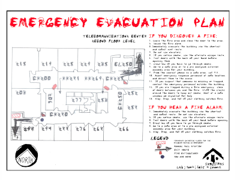

Handwriting · Typography
Code of Conduct
CU Boulder

Code of Conduct; a Typeface
Klara Nitsche
Code of Conduct is a typeface created in Fall 2024, during the first semester of my MS degree at CU Boulder. I spent 3 weeks visiting communal study space whiteboards all across CU Boulder, taking photographs of students’ exam review sessions, homework problems, presentation practices, and more. I isolated, digitized, and sorted over 3000 letters and special characters from this data set using MaxQDA, a qualitative coding platform, before compiling each letter in Adobe Photoshop. The name of the typeface references the institutional Code of Conduct, by which every student of a U.S. university must agree to conduct themselves by. The type specimen reimagine institutional signage in the ‘voice’ of students, shifting responsibility for community care, safety, and policing from the institution to the student body.
Why whiteboards? Writing on a whiteboard is not permanent. But the ephemerality of the materials provides a low-barrier to engage with the object. Whiteboards are also often shared, blurring the lines between authorship and ownership of the written word. Notably, the content of whiteboards in school environments highlights the emphasis of certain symbols in different fields- how does a Y written for a physics review differ from that of a history exam? Whiteboards offer insight into unpolished symbolic shorthand.
Collecting handwriting in a specific time period also created an in-situ font, one dependent on the contextual factors: time of data collection, season of academic involvement, and demographic of writers. Were this typeface to be recreated with this same process, it would always look different by way of individual handwriting styles and constantly shifting actors, contexts, and windows of data collection. Therefore, this project provides an imperfect snapshot of the student collective and how they conducted themselves at this certain time of observation.